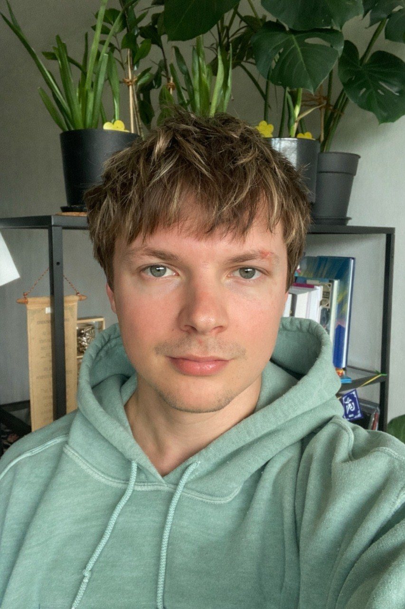

I'm a developer with a solid grasp of the entire web stack and a deep understanding of computer science. I love tackling unique challenges and crafting intricate, engaging interfaces.
I've gained a lot of experience in areas like optimization, animation, architecture, testing, microfrontends, and library development — along with some extras like cooking and video games. I also mentor junior devs, conduct interviews, report, give talks, and, above all, communicate — a lot. I have a background in theater, so soft skills and connecting with people come naturally to me. Oh, and I can write backend code (Node / Rust) and speak SQL like it's my native tongue!